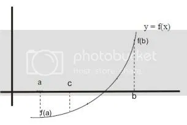

Metode Bagi-Dua adalah algoritma pencarian akar pada sebuah interval. Interval tersebut membagi dua bagian, lalu memilih dari dua bagian ini dipilih bagian mana yang mengandung akar dan bagian yang tidak mengandung akar dibuang. Hal ini dilakukan berulang-ulang hingga diperoleh akar persamaan atau mendekati akar persamaan. Metode ini berlaku ketika ingin memecahkan persamaan f(x) = 0 dengan f(x) merupakan fungsi kontinu.

Bagaimana Prosedur Metode Bagi Dua?
Misal diketahui jika f(x) adalah sebuah fungsi kontinu pada suatu interval [a, b], dimana nilai dari f(a)f(b)<0. Karena f sudah diketahui kontinu, maka akan ada setidaknya satu akar diantara interval [a, b]. Selanjutnya kita definisikan c sebagai nilai tengah dari [a, b] atau c = (a+b)/2. Dari sini kita mendapatkan dua interval baru, yaitu [a, c] dan [c, b]. Selanjutnya akan dicek apakah f(a)f(c)<0 atau f(b)f(c)<0. Jika f(a)f(c)<0, maka artinya akan setidaknya ada satu akar diantara interval [a, c]. Jika tidak, maka setidaknya akan ada satu akar diantara interval [c, b]. Ulangi kembali langkah dari awal dengan mengsubtitusi nilai b menjadi c apabila f(a)f(c)<0 dan a menjadi c jika f(b)f(c)<0.
Contoh penyelesaian dengan Metode Bagi Dua
Misalkan diketahui sebuah fungsi y = x^3 + 2x + 1. Carilah akar dari fungsi tersebut!